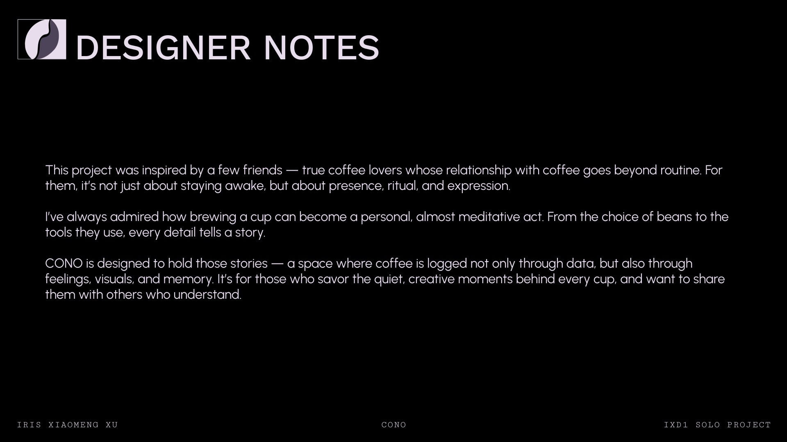
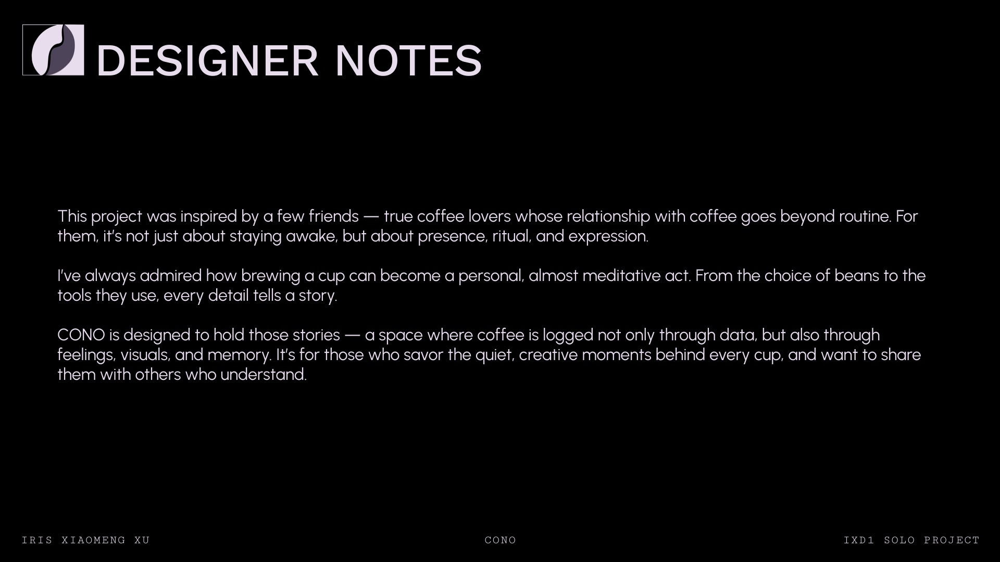

CONO
CONO is a thoughtfully crafted app for coffee lovers and professionals — a place to belong, for those whose days begin with coffee and stories. Inspired by friends who see brewing coffee not just as a daily habit but as a personal ritual, CONO provides a space to log, reflect, and share.
Whether you’re behind the bar or at home, CONO helps you document your brews and revisit your journey — not just through data, but through memories, visuals, and emotions. It’s designed for those who care about the quiet details: the flavor of a single origin, the method of brewing, the feeling behind a cup.
By combining flexible journaling tools, a searchable log system, and a welcoming community space, CONO turns fragmented notes into meaningful reflections. It honors both the routine and the creative expression behind every brew — and offers a space to grow, one cup at a time.
 
